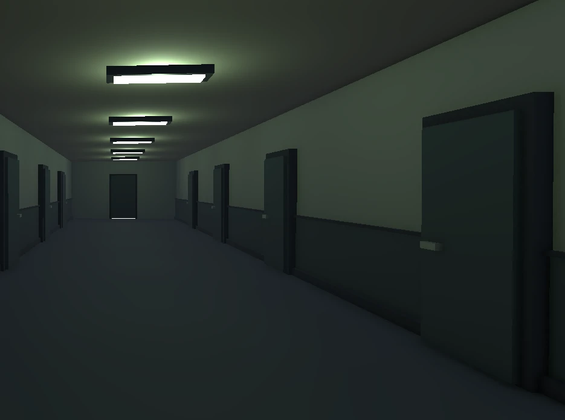
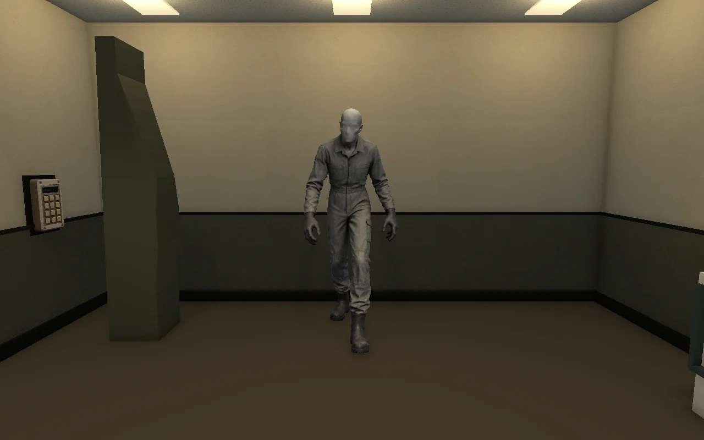

INTERACTION 01
Give the rooms a reason to exist.
An opening sequence introduces the repeating facility and R. Shen. Voiced archives separate puzzle rooms; reading pauses the countdown.
PLAYER EFFECT / CONTEXT BEFORE THE NEXT PUZZLEA UNITY PUZZLE HORROR EXPERIMENT
The lights are a clock.
The room is a question.
At 03:07, an ordinary lab becomes a place without an outside. Follow R. Shen’s traces. Read what the light leaves behind.

01 / THE EXPERIENCE
Observe, manipulate, assemble, reinterpret. Each puzzle changes how you read the same institutional space. Voiced archives give the discoveries a human context.
Drag to rotate, scroll to zoom. Select a numbered room to move closer. Geometry and positions come from the running Unity prototype. Ceilings are removed and walls cut to 1.7 m for visibility; colours are simplified. Narrative interludes use a separate teleported set, so they are not drawn as connecting rooms.
02 / IN MOTION
A 90-second in-engine recording. This October 19 build predates the new character models; the object study below shows the later assets.
03 / OBJECT STUDIES
Inspect the actual generated assets used in Unity. These lightweight web copies preserve their static poses. Drag to orbit, scroll to zoom, or use the arrow keys.
Drag to orbit / scroll to zoom

04 / UNDER THE SURFACE
Select a script to trace its direct relationships and read the actual C# source. This is an exported snapshot of the local project, not a live connection to Unity.
PARAMETER LAB / BROWSER SIMULATION
Change the room duration, then scrub through time. The light states follow the runtime thresholds: flicker at 30% remaining, sequential shutoff at 5%.
This demonstration changes the website only. It does not edit your Unity project. It omits random flicker, penalties and discovery bonuses.
C# field defaults are extracted from source. Scene values may differ. RoomTimer resets its flicker and shutoff windows when a countdown begins.
| Script / field | Value | Meaning |
|---|
05 / DEVELOPMENT JOURNAL
Reconstructed from the work in this project. These notes describe changes to the player’s experience, rather than website styling or unverified playtest claims.
An opening sequence introduces the repeating facility and R. Shen. Voiced archives separate puzzle rooms; reading pauses the countdown.
PLAYER EFFECT / CONTEXT BEFORE THE NEXT PUZZLEThe rotating plate receives a dedicated readable face. Its stand stays fixed while the plate and rear map rotate. The first room’s code HUD no longer follows the player into room two.
PLAYER EFFECT / LESS VISUAL INTERFERENCEGenerated equipment replaces six placeholder props. Mounting depth, desk contact, controls and the mirror’s support are adjusted while preserving interaction targets.
PLAYER EFFECT / CLEARER PHYSICAL AFFORDANCESA posed human replaces the sphere-and-oval figure on the bed. A faceless Janitor replaces the capsule figure, faces the player on appearance and uses the original blink timing.
PLAYER EFFECT / READABLE CHARACTERSChoose a milestone and write your own reflection. No student reflection has been recorded yet. Drafts stay in this browser until you export them; they are not published automatically.
THE WORK CONTINUES
Repository access is restricted. This website is a standalone project showcase.